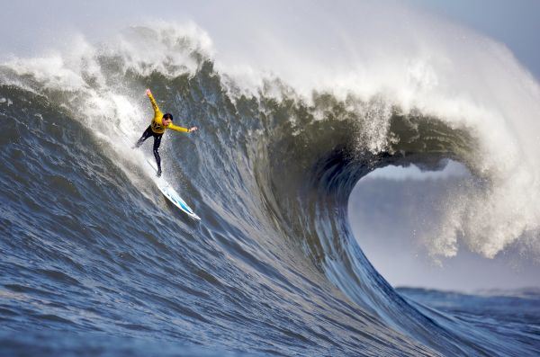

Images
1. Include 1 image using an IMG tag.
2. Create a Favicon and link to it using a link tag.
3. Answer the following questions on your page:
- What kind of photos are good to encode using JPEG?
- Real world pictures are used on JPEG/JPG
- What kind of photos are good to encode using GIF?
- Logos are used for GIFS, and they look best when pictures dont have that much color in them.
- What is unique about the PNG format?
- PNG has transparency or see through, logos can also be used here.
- How do you resize your photo to the size it should be displayed?
- You can resize it in the photos app on windows or by using an online free resizing tool on a website.
- Why should you resize photos using photo editing software instead of resizing it using CSS?
- It makes it faster to load the page if you already have the right image size instead of css doing it for you.
- What is CSS validation?
- Its the process for checking your css code, just like html validation.